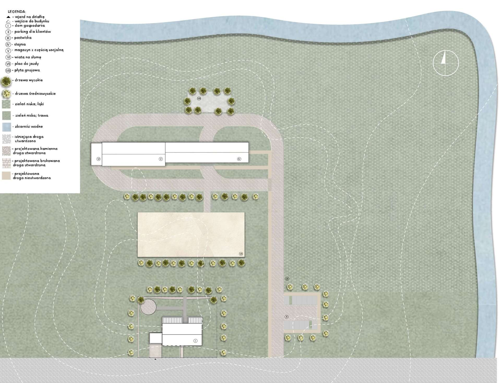

Horse stable in Chwarszczany
The most important element of the study area is an old, dilapidated stable, which is being revitalized. Due to its interesting form, the facility was considered the main aspect of the project, imposing aesthetics and functional solutions in the further stages of work on the concept. During the site visit, an inventory was made on the basis of which the concept was created. The stud farm consists of a warehouse, stables, pastures and a riding area. Providing all the necessary elements for breeding horses and running a riding school.
The result of this work, apart from the restored stable, is primarily the design of the house single- -family, intended for a multi-generational family (2+2+2 family model), binding his professional life with running an equestrian center. The house with its aesthetics refers to previously described stable, thanks to which it fits perfectly into the rural landscape and buildings Chwarszczany. The body of the building is covered with a gable roof inclined at an angle of 35 degrees. The facade, on the other hand, was finished with light brick, as was the cornice running around the building. The house faces parallel to the stone road running by the plot. At the entrance to the building there are utility rooms and a kitchen, bedrooms for the family are set along the side walls of the building. Living and dining room are central elements of the house and are open to a terrace and a garden from which you can admire a restored stable and the Chapel of the Templars - the compositional dominant of Chwarszczany.
Land development plan
Floor plan
Stable

House

Roof structure diagram

Section
Stable

House

Visualisations